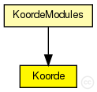
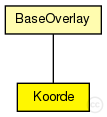

This documentation is released under the Creative Commons license
This documentation is released under the Creative Commons licenseThe main module of the Koorde implementation
Author: Jochen Schenk, Ingmar Baumgart
The following diagram shows usage relationships between types. Unresolved types are missing from the diagram. Click here to see the full picture.
The following diagram shows inheritance relationships for this type. Unresolved types are missing from the diagram. Click here to see the full picture.
| BaseOverlay (simple module) |
Base class for overlay implementations |
If a module type shows up more than once, that means it has been defined in more than one NED file.
| KoordeModules (compound module) |
Implementation of the Koorde DHT overlay as described in "Koorde: A simple degree-optimal distributed hash table" by M. Frans Kaashoek and David R. Karger,. published in Proceedings of the 2nd International Workshop on Peer-to-Peer Systems (IPTPS '03). |
| Name | Type | Default value | Description |
|---|---|---|---|
| rpcUdpTimeout | double |
default timeout value for direct RPCs |
|
| rpcKeyTimeout | double |
default timeout value for routed RPCs |
|
| optimizeTimeouts | bool |
calculate timeouts from measured RTTs and network coordinates |
|
| rpcExponentialBackoff | bool |
if true, doubles the timeout for every retransmission |
|
| localPort | int |
UDP port for overlay messages |
|
| debugOutput | bool |
enable debug output |
|
| keyLength | int |
overlay key length in bits |
|
| nodeId | string |
optional nodeId as string in hexadecimal notation |
|
| useCommonAPIforward | bool |
enable CommonAPI forward() calls |
|
| drawOverlayTopology | bool |
draw arrow to successor node? |
|
| hopCountMax | int |
maximum number of overlay hops |
|
| recNumRedundantNodes | int |
numRedundantNodes for recursive routing |
|
| joinOnApplicationRequest | bool |
only join the overlay on application request |
|
| collectPerHopDelay | bool |
delay statistics for single hops |
|
| routeMsgAcks | bool |
use RPCs for route messages |
|
| lookupRedundantNodes | int |
number of next hops in each step |
|
| lookupParallelPaths | int |
number of parallel paths |
|
| lookupParallelRpcs | int |
number of nodes to ask in parallel |
|
| lookupVerifySiblings | bool |
true, if siblings need to be authenticated with a ping |
|
| lookupMajoritySiblings | bool |
true, if sibling candidates are selected by a majority decision if using parallel paths |
|
| lookupMerge | bool |
true, if parallel Rpc results should be merged |
|
| lookupFailedNodeRpcs | bool |
communicate failed nodes |
|
| lookupStrictParallelRpcs | bool |
limited the number of concurrent rpcs to parameter parallelRpcs |
|
| lookupUseAllParallelResponses | bool |
merge all parallel responses from earlier steps |
|
| lookupNewRpcOnEveryTimeout | bool |
send a new RPC immediately after an RPC timeouts |
|
| lookupNewRpcOnEveryResponse | bool |
send a new RPC after every response, even if there was no progress |
|
| lookupFinishOnFirstUnchanged | bool |
finish lookup, if the last pending RPC returned without progress |
|
| lookupVisitOnlyOnce | bool |
if true, the same node is never asked twice during a single lookup |
|
| lookupAcceptLateSiblings | bool |
if true, a FindNodeResponse with sibling flag set is always accepted, even if it is from a previous lookup step |
|
| routingType | string |
default routing mode (iterative, semi-recursive,...) |
|
| rejoinOnFailure | bool |
rejoin after loosing connection to the overlay? |
|
| sendRpcResponseToLastHop | bool |
needed by KBR protocols for NAT support |
|
| recordRoute | bool |
record visited hops on route |
|
| dropFindNodeAttack | bool |
if node is malicious, it tries a findNode attack |
|
| isSiblingAttack | bool |
if node is malicious, it tries a isSibling attack |
|
| invalidNodesAttack | bool |
if node is malicious, it tries a invalidNode attack |
|
| dropRouteMessageAttack | bool |
if node is malicious, it drops all received BaseRouteMessages |
|
| measureAuthBlock | bool |
if true, measure the overhead of signatures in rpc messages |
|
| restoreContext | bool |
if true, a node rejoins with its old nodeId and malicious state |
|
| stabilizeDelay | double |
number of seconds between two stabilize algo calls |
|
| stabilizeRetry | int |
retries before neighbor considered failed |
|
| joinRetry | int |
number of join retries |
|
| joinDelay | double |
time interval between two join tries |
|
| successorListSize | int |
maximal number of nodes in successor list |
|
| deBruijnListSize | int |
maximal number of nodes in de Bruijn list |
|
| shiftingBits | int |
number of bits concurrently shifted |
|
| deBruijnDelay | double |
number of seconds between two de Bruijn algo calls |
|
| fixfingersDelay | double |
relic from Chord |
|
| checkPredecessorDelay | double |
checkPredecessor interval (sec) |
|
| aggressiveJoinMode | bool |
use modified (faster) JOIN protocol |
|
| extendedFingerTable | bool |
use the extended finger table? |
|
| numFingerCandidates | int |
relic from Chord |
|
| proximityRouting | bool |
use proximity routing |
|
| useOtherLookup | bool |
flag which is indicating that the optimization other lookup is enabled |
|
| useSucList | bool |
flag which is indicating that the optimization using the successorlist is enabled |
|
| setupDeBruijnBeforeJoin | bool |
if true, first setup the de bruijn node using the bootstrap node and than join the ring |
|
| setupDeBruijnAtJoin | bool |
if true, join the ring and setup the de bruijn node using the bootstrap node in parallel |
|
| mergeOptimizationL1 | bool |
enable merge optimization OPL1 |
|
| mergeOptimizationL2 | bool |
activate merge optimization OPL2 |
|
| mergeOptimizationL3 | bool |
activate merge optimization OPL3 |
|
| mergeOptimizationL4 | bool |
activate merge optimization OPL4 |
|
| memorizeFailedSuccessor | bool |
| Name | Value | Description |
|---|---|---|
| class | Koorde | |
| display | i=block/circle |
| Name | Direction | Size | Description |
|---|---|---|---|
| udpIn | input |
gate from the UDP layer |
|
| udpOut | output |
gate to the UDP layer |
|
| tcpIn | input |
gate from the TCP layer |
|
| tcpOut | output |
gate to the TCP layer |
|
| appIn | input |
gate from the application |
|
| appOut | output |
gate to the application |
|
| direct_in | input |
gate for sendDirect |
// // The main module of the Koorde implementation // // @author Jochen Schenk, Ingmar Baumgart // simple Koorde extends BaseOverlay { parameters: @class(Koorde); double stabilizeDelay @unit(s); // number of seconds between two stabilize algo calls int stabilizeRetry; // retries before neighbor considered failed int joinRetry; // number of join retries double joinDelay @unit(s); // time interval between two join tries volatile int successorListSize; // maximal number of nodes in successor list int deBruijnListSize; // maximal number of nodes in de Bruijn list int shiftingBits; // number of bits concurrently shifted double deBruijnDelay @unit(s); // number of seconds between two de Bruijn algo calls double fixfingersDelay @unit(s); // relic from Chord double checkPredecessorDelay @unit(s); // checkPredecessor interval (sec) bool aggressiveJoinMode; // use modified (faster) JOIN protocol bool extendedFingerTable; // use the extended finger table? int numFingerCandidates; // relic from Chord bool proximityRouting; // use proximity routing bool useOtherLookup; // flag which is indicating that the optimization other lookup is enabled bool useSucList; // flag which is indicating that the optimization using the successorlist is enabled bool setupDeBruijnBeforeJoin; // if true, first setup the de bruijn node using the bootstrap node and than join the ring bool setupDeBruijnAtJoin; // if true, join the ring and setup the de bruijn node using the bootstrap node in parallel bool mergeOptimizationL1; // enable merge optimization OPL1 bool mergeOptimizationL2; // activate merge optimization OPL2 bool mergeOptimizationL3; // activate merge optimization OPL3 bool mergeOptimizationL4; // activate merge optimization OPL4 bool memorizeFailedSuccessor; }
This documentation is released under the Creative Commons license